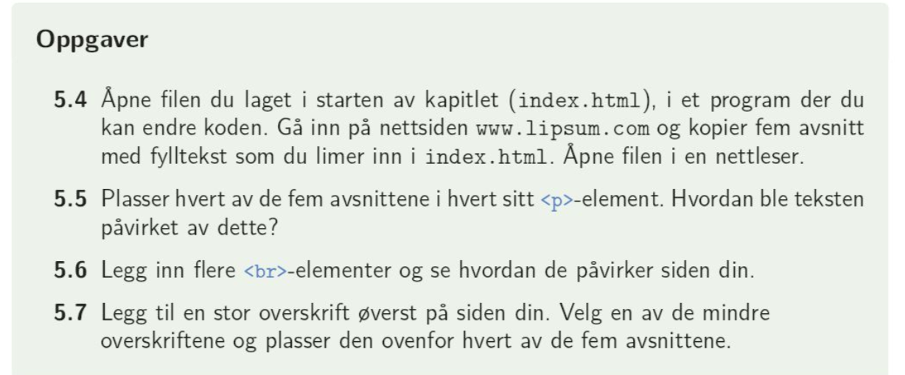
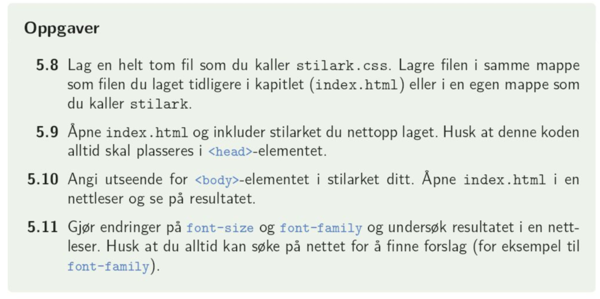
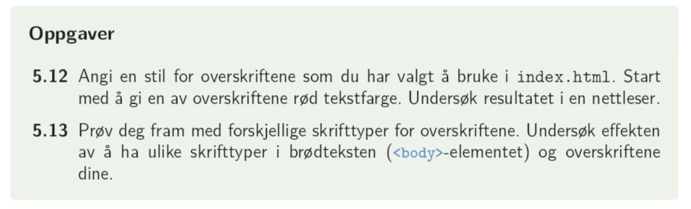

Vi har lært at tekst skrives i avsnitt markert med taggen < p > for paragraph. Dersom vi skriver tekst uten denne taggen vil den også synes på siden, men da mister man muligheten for å stilsette teksten i css.
For å få linjeskift trenger man ikke avslutte og starte en ny < p >, men vi kan bruke taggen < br >.
Vi angir overskrifter fra taggen < h1 > til < h6 >. < h6 > er den minste underoverskriften.
I boka side 44: oppgave 5.4 - 5.7
CSS = cascading style sheet. Setter utseendet for nettsiden: farger, plasseringer, størrelser, skrifttyper osv. Dette kan legges inn på tre ulike måter:
Internal, med < style > < /style >, kan brukes dersom vi har lite stilsetting. All stilsetting skrives da som
elementViVilEndre{
egenskapViVIilEndre: nyVerdi;
}
External er den metoden vi i hovedsak skal bruke. Dvs at dere må referere til egne stilark i alle oppgaver, der all css-kode legges.
Dere kan velge å ha flere stilark til samme nettside, for eksempel et generelt og et som er spesielt for oppgaven. Da legger man til to lenker:
< head >
< link rel = "stylsheet" type = "text/css" href = "css/stilarkGenerelt.css" >
< link rel = "stylsheet" type = "text/css" href = "css/stilarkOppgaven.css" >
< /head >
For at vi skal være sikre på at html-fila kaller på det ønskede stilarket, eller riktig bilde eller annet, må vi ha orden på hvor filene ligger.
Under vises to eksempler på hvordan jeg kan finne css-fila:
Fila finnes da som
< link rel = "stylsheet" type = "text/css" href = "css_intro.css" >
Fila finnes da som
< link rel = "stylsheet" type = "text/css" href = "css/css_intro.css" >
Fila finnes da som
< link rel = "stylsheet" type = "text/css" href = "../css_intro.css" >
Mens et html-dokument har tagger som angir at det er et html-dokument (< !doctype html>, < body > osv.), går css-fila "rett på sak".
Strukturen er at man først angir hvilket element det gjelder, f.eks body, h1, p, img osv. før man gir egenskapene for disse. Kommentarer angis i /* */ i css-filer:
body{
background-color: #EBF0F1; /* bakgrunnsfarge */
color: #1C3C50; /* skriftfarge */
margin-left: 50px; /*avstand på venstre side */
}
p{
font-size: 150%; /*skriftstørrelse, kan også gis i px */
}
Ved hjelp av css kan vi for teksten endre farge, bakgrunnsfarge, kantlinjer tekstvekting og skrifttype:
Denne skriften er skrevet i fet skrift
#bold{
font-weight: bold;
}
#red{
color: #D60000;
font-style: italic;
}
Denne skriften er i verdana
#type{
font-family: verdana, arial, sans-serif;
}
Mer om ulike fonter finnes her: css-fonter og her: liste over ulike fonter. Her brukes " " rundt skrifttyper med mellomrom
#background{
width: 450px;
background-color: pink;
border: 1px dotted purple;
}
Side 48: Oppgave 5.8 - 5.11

Side 50: Oppgave 5.12 - 5.13

Deretter: lag et html-dokument med ulike tekster og bruk css i kombinasjon med klasser/id til å endre skriftfarger, typer, størrelser, bakgrunnsfarger, kantlinjer og vekting. Her skal du prøve deg frem med ulike egenskaper. Besøk nettsiden w3schools og søk opp de ulike egenskapene for å se hvilke verdier du kan velge.
Er noe uklart fra kapittel 5? Se gjennom videogjennomgangene til læreboka her: spilleliste kapittel 5